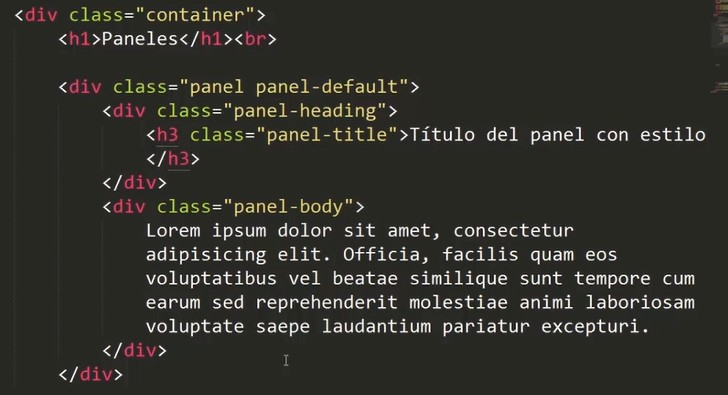
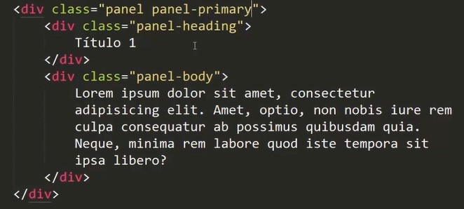
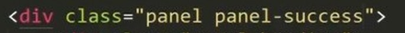
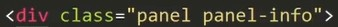
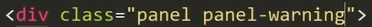
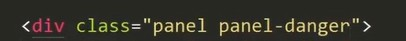
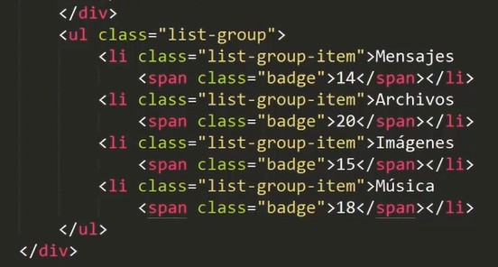
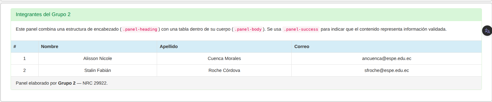
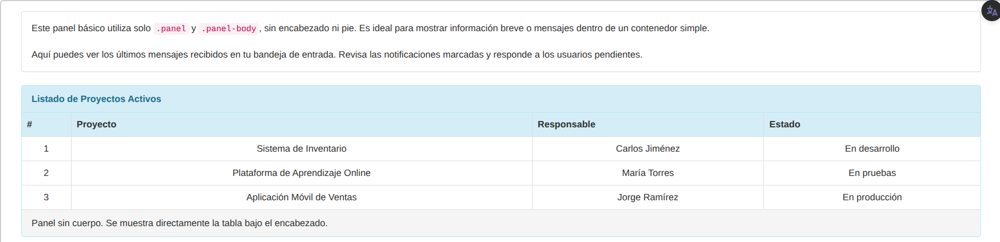
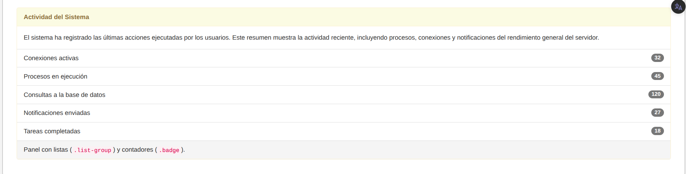

PANEL - GRUPO 07
Paneles en Bootstrap
Los paneles en Bootstrap fueron un componente introducido en las versiones 3.x del framework, diseñados para mostrar contenido dentro de recuadros con bordes, encabezados y pies de sección.
Su estructura básica se componía de tres partes principales: .panel-heading para el título o encabezado, .panel-body para el contenido principal, y .panel-footer para la parte inferior opcional.
Bootstrap ofrecía distintos tipos de paneles mediante clases de contexto como .panel-default, .panel-primary, .panel-success, .panel-info, .panel-warning y .panel-danger,
las cuales permitían identificar visualmente la importancia o el estado del contenido (por ejemplo, información, advertencia o error).
Estos paneles fueron muy utilizados hasta Bootstrap 3, pero a partir de Bootstrap 4 fueron reemplazados por los componentes de tarjetas (.card).
El cambio se debió a que las tarjetas ofrecen una estructura más flexible, moderna y adaptable a diferentes tamaños de pantalla, además de simplificar el código y unificar estilos para mostrar contenido con encabezado, cuerpo, pie, imágenes o listas dentro de un mismo componente.
Video de Paneles en Bootstrap
Ejemplos del video de Paneles en Bootstrap
Ejemplo 1
Panel básico
Un panel básico panel panel-default es una estructura con bordes y relleno que encapsula contenido.
Explicación del código:
.panel panel-default: crea un panel básico con borde y fondo gris claro..panel-body: contiene el contenido principal del panel, como texto o elementos visuales.
Ejemplo 2
Panel con título
Este ejemplo muestra un panel con encabezado usando
.panel-heading y .panel-title
que permite mostrar un título o descripción corta.

Explicación del código:
.panel panel-default: crea un panel básico con borde y fondo gris claro..panel-heading: agrega un encabezado superior al panel..panel-title: define el texto del título dentro del encabezado..panel-body: contiene el contenido principal del panel.
Ejemplo 3
Panel con Footer
Este ejemplo muestra cómo agregar un pie de página usando
.panel-footer, ideal para colocar notas, botones o información adicional al final del panel.
Explicación del código:
.panel panel-default: crea un panel básico con borde y fondo gris claro..panel-body: contiene el contenido central..panel-footer: agrega una sección inferior de pie de página con tono más claro.
Ejemplo 4
Paneles contextuales
Los paneles contextuales permiten aplicar distintos colores de borde y encabezado para transmitir el estado del contenido (principal, éxito, información, advertencia, peligro).




Explicación del código:
.panel-primary: indica el panel principal o destacado..panel-success: representa éxito o acción correcta..panel-info: muestra información neutra o adicional..panel-warning: advierte sobre precauciones..panel-danger: señala errores o alertas.
Ejemplo 5
Panel con tablas
Este panel integra una .table dentro de su estructura, ideal para mostrar datos organizados.
Se combina con .panel-heading y .panel-body para mantener el formato clásico.

Explicación del código:
.panel-primary: indica el panel principal o destacado..panel-heading: muestra el título o descripción del panel..panel-body: contiene el texto o elementos principales..table: estructura los datos en filas y columnas con bordes suaves.
Ejemplo 6
Panel con listas de elementos
Este ejemplo muestra un panel con un grupo de listas usando
.list-group y .list-group-item para representar
elementos dentro del panel y un badge para indicar cantidades o notificaciones.

Explicación del código:
.panel-primary: indica el panel principal o destacado..panel-heading: muestra el encabezado superior del panel..panel-body: contiene texto descriptivo o contenido adicional..list-group: define una lista vertical de elementos estructurados..list-group-item: representa cada elemento de la lista..badge: muestra un contador o notificación asociada a cada elemento.
Ejercicio Adicional
Paneles Aplicados en Bootstrap 3
En este ejercicio se presentan distintos tipos de paneles de Bootstrap 3, utilizados para organizar y mostrar información dentro de contenedores con bordes, encabezados, cuerpos y pies de página. Cada panel demuestra una de las variantes disponibles: básicos, con tabla, sin cuerpo, con listas, y contextuales (de colores).
Código aplicado dentro del iframe:<!-- ===== Fila 4: Panel con tabla ===== -->
<div class="panel panel-success">
<div class="panel-heading">
<h3 class="panel-title">Integrantes del Grupo 2</h3>
</div>
<div class="panel-body">
<p>Este panel combina un encabezado, un cuerpo descriptivo y una tabla integrada.</p>
</div>
<table class="table table-bordered text-center">
<thead>
<tr><th>#</th><th>Nombre</th><th>Apellido</th><th>Correo</th></tr>
</thead>
<tbody>
<tr><td>1</td><td>Alisson</td><td>Cuenca</td><td>ancuenca@espe.edu.ec</td></tr>
<tr><td>2</td><td>Stalin</td><td>Roche</td><td>sfroche@espe.edu.ec</td></tr>
</tbody>
</table>
<div class="panel-footer">
Panel elaborado por Grupo 2 — NRC 29922
</div>
</div>
Explicación: Este panel usa .panel-success para mostrar una tabla validada con encabezado, cuerpo descriptivo y pie de autoría.

<!-- ===== Fila 5: Paneles y body ===== -->
<!-- Panel básico -->
<div class="panel panel-default">
<div class="panel-body">
Este panel básico usa solo .panel-body sin encabezado ni pie.
Es ideal para mostrar información breve o mensajes dentro de un contenedor simple.
</div>
</div>
<!-- Panel con tabla sin cuerpo -->
<div class="panel panel-info">
<div class="panel-heading"><strong>Listado de Proyectos Activos</strong></div>
<table class="table table-bordered text-center">
<thead>
<tr><th>#</th><th>Proyecto</th><th>Responsable</th><th>Estado</th></tr>
</thead>
<tbody>
<tr><td>1</td><td>Sistema de Inventario</td><td>Carlos Jiménez</td><td>En desarrollo</td></tr>
<tr><td>2</td><td>Plataforma de Aprendizaje</td><td>María Torres</td><td>En pruebas</td></tr>
</tbody>
</table>
<div class="panel-footer">Panel sin cuerpo: la tabla se muestra directamente bajo el encabezado.</div>
</div>
<!-- Panel con lista de grupo -->
<div class="panel panel-warning">
<div class="panel-heading"><strong>Actividad del Sistema</strong></div>
<div class="panel-body">
Muestra la actividad reciente, procesos y conexiones del sistema.
</div>
<ul class="list-group">
<li class="list-group-item">Conexiones activas <span class="badge">32</span></li>
<li class="list-group-item">Procesos en ejecución <span class="badge">45</span></li>
<li class="list-group-item">Consultas a la base de datos <span class="badge">120</span></li>
</ul>
<div class="panel-footer">Panel con listas (.list-group) y contadores (.badge).</div>
</div>
Explicación: Esta fila incluye un panel básico, uno con tabla sin cuerpo y otro con listas, mostrando variaciones de estructura y propósito.


<!-- ===== Fila 6: Paneles contextuales ===== -->
<div class="panel panel-success">
<div class="panel-heading">Estado del Proyecto</div>
<div class="panel-body">Todos los módulos se encuentran operativos y verificados. Pruebas completadas exitosamente.</div>
</div>
<div class="panel panel-warning">
<div class="panel-heading">Advertencia del Sistema</div>
<div class="panel-body">Algunos formularios presentan lentitud. Se recomienda optimizar consultas a la base de datos.</div>
</div>
<div class="panel panel-info">
<div class="panel-heading">Información del Equipo</div>
<div class="panel-body">Grupo 2 — NRC 29922. Proyecto académico de Tecnologías Web desarrollado en la ESPE.</div>
</div>
<div class="panel panel-danger">
<div class="panel-heading">Alerta Crítica</div>
<div class="panel-body">Falla al conectar con el servidor de respaldo FTP. Verificar credenciales y puerto 21.</div>
</div>
Explicación: Los paneles contextuales aplican colores según su propósito: success para éxito, warning para advertencia, info para información general y danger para errores críticos.

.panel: contenedor principal de Bootstrap 3 para agrupar contenido con bordes y fondos..panel-default / .panel-success / .panel-info / .panel-warning / .panel-danger: determinan el color contextual del panel según el tipo de mensaje..panel-heading: cabecera superior del panel, donde se ubican títulos o encabezados..panel-body: cuerpo principal que contiene texto, tablas o componentes internos..panel-footer: sección inferior, útil para notas o créditos..table: permite mostrar información tabular integrada dentro del panel..list-groupy.badge: agregan listas y contadores de notificaciones dentro del panel.